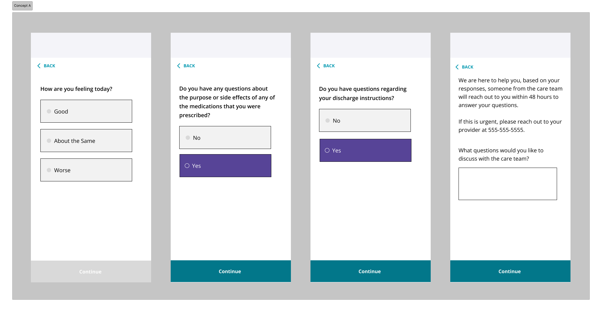
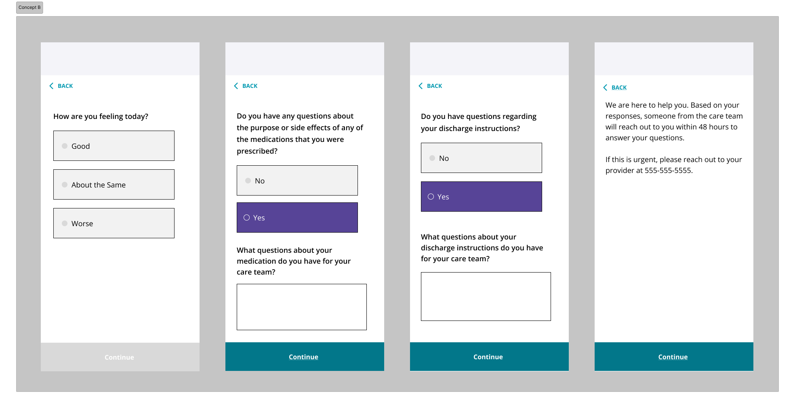

Validating an automated post-discharge survey system that reduced clinician burden and kept patients from falling through the cracks after leaving the hospital.
The existing post-discharge process relied on clinicians making follow-up phone calls to patients after hospital stays. These calls were meant to answer questions and reduce readmission risk.
The organization proposed replacing or supplementing phone calls with a short survey sent directly to patients. The UX team created two design concepts and I led research to evaluate them with users before committing to development.
The existing follow-up process had four compounding failure points that the new solution needed to address.
I ran unmoderated concept testing via Userbrain with 14 participants. Each participant interacted with one concept and answered questions about clarity, ease of use, and overall impression. I developed the research plan, set up and launched the tests, analyzed all sessions, and synthesized the findings into actionable recommendations for the design team.


In terms of ease of use, Concept B outperformed Concept A. Participants liked how they were prompted with follow-ups after each question response.
Participants strongly preferred surveys of 3–5 questions. The proposed 3-question format hit the right balance — short enough to complete without wanting to quit, long enough to provide sufficient information.
Several participants wanted to be able to provide more information about their health condition in order to flag a faster response from their care team.
Users wanted to know when they'd hear back and from whom. Without this, the survey felt like sending a message into a void. A clear confirmation state explaining next steps was a high-priority need.
As someone who's had a recent surgery, I would have appreciated something like this.
— Research participant
It's very intuitive and easy to use. I wish my doctor had something like this.
— Research participant
Research delivered a clear path forward. After design and copy changes were made and handed off to a developer to build, the project team outlined next steps to test the survey.
Because this wasn't tied to an active product team, we began without dedicated engineering support and needed to prove the concept's value through design and research alone. Unmoderated testing allowed us to quickly gather real‑world feedback, validate the idea, and give stakeholders the evidence they needed to advocate for next steps.